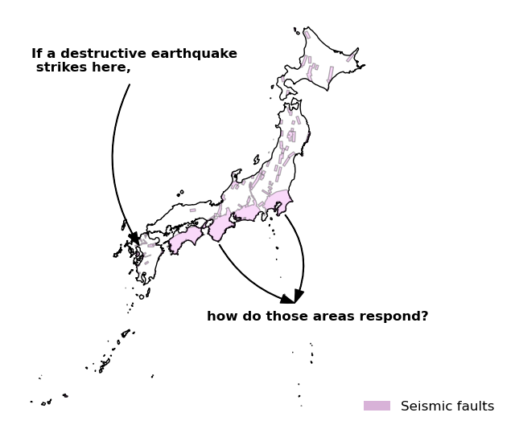

Master’s Thesis Seminar
Seismic Hazard Mapping In Japan: effects on land and real estate prices
Intuition

Description of my research
Research Question & Motivation
Research Question
How costly it is to be exposed to natural disasters?
Why does it matter?
People’s awareness and behavior about such threats
Investments and maybe inequalities in the long run
Intensifying disasters: floods, hurricanes, wildfires, and droughts.
My research may apply to other type of risks
Theoretical Part
Still in progress
Let \(p\) be the subjective probability of a earthquake to happen. \(p\) depends on \(i\), the information set available, and \(r\), the objective attributes that make such an event more likely. Then the HPF is:
\(P = P(Z, r, p(i, r))\)
Expected utility becomes:
\(EU = p(i, r) \cdot U^E[Z, r, Q] + (1 - p(i, r)) \cdot U^{NE}[Z, r, Q]\)
Given the budget constraint \(M = P(Z, r, p(i, r)) + Q\) (with \(Q\) being a composite commodity), the maximization of utility is given by:
\(\frac{\partial P}{\partial p}=\frac{U^{E} - U^{NE}}{p(i,r)\frac{\partial U^{E}}{\partial Q}+\left(1 - p(i,r)\right)\frac{\partial U^{NE}}{\partial Q}}\)
Empirical Analysis: A Literature Review
Many papers on natural disasters and their consequences on housing prices (Brookshire et al. (1985), Hidano, Hoshino, and Sugiura (2015), Balboni (2025) among many others).
My work heavily relies on Ikefuji et al. (2022).
My main contribution:
Extending the analysis to the housing market
Time extension (recent years)
Data (1)
Risk mapping data
- Japan Meteorological Agency Records (JMA)
- all earthquakes records
- coordinates / magnitude
- Japan Seismic Hazard Information Station (J-SHIS)
- risk hazard maps
- uploaded every year
Real estate data
- LIFULL HOMES
- rentals and sales across Japan from 2015 to 2023
Other data
E-STAT & OTHERS
aggregated variables & macroeconomic variables
Main argument of my research: matching them
Data (2)
Data (2)

Many measures of seismic risk. In this study, I choose PSHMS :
Probability that a earthquake of magnitude 6 or more will happen in the next 30 years.
Let denote this probability \(p\).
Data (3)
The Liffull Homes dataset:
| pub_start_date | pub_end_date | building_id | unit_id | status |
| bukken_type | all_number | empty_number | addr1_1_name | addr1_2_name |
| addr2_name | rosen1_name | eki1_name | walk_distance1 | rosen2_name |
| eki2_name | walk_distance2 | land_youto | land_toshi | land_area |
| latitude | longitude | land_right_label | house_kouzou_label | sqft |
| house_kaisuu | house_kaisuu_chika | kenchiku_date | flg_new | room_kaisuu |
| balcony_area | window_angle_label | madori_kind_all_label | price | money_tsubo |
| money_kyoueki | money_reikin_amount | money_shikikin_amount | parking_money | usable_status_label |
| school_ele_distance | convenience_distance | super_distance | hospital_distance | park_distance |
- Many variables, billions of observations
- Outcomes: price & time-on-the-market
Data (4)
Capturing the attractivness (city level)
| yearcode | areacode | area | comm_centers |
| libraries | lifeexp_male | hospitals | physicians |
| dentists | new_dwellings | dwellings_serv | large_retail |
| kindergartens | elem_schools | elem_teachers | elem_students |
| upper_sec_sch | pop_total2 | employed | labor_force |
| skilled_workers | selfemp_with | commute_out | commute_in |
| fin_power | invest_exp | disaster_exp | edu_exp_elem |
| edu_exp_lower | edu_exp_upper | pop_total | median_age |
| pop_o65 | foreigners | did_pop | inmigrants |
| outmigrants | households | pop_total_linear | lifeexp_male_linear |
and the macroeconomic conditions
Such as the interst rate, Indexes of Business Conditions (Cabinet office).
Empirical Strategy (1)
In progress
\[ \begin{aligned} \ln P_{it} = \alpha_0 &+ \sum_{j=1}^{J} \alpha_j Z_{ij} + \beta r_i + \gamma Exposed_i + \delta Post_{it} \\ &+ \theta_t (Post_{it} \times Exposed_i) + \varepsilon_{it} \end{aligned} \]
- \(Z_{ij}\): vector of property and location controls
- \(r_i\): location fixed effects (prefectures) interacting with year fixed effects
- \(Exposed_i\): baseline seismic risk exposure (\(p > 0.3\))
- \(Post_{it}\): \(i\) is published within one month after a big earthquake (over magnitude 6)
- \(Post_{it} \times Exposed_i\): interaction capturing heterogeneous effects
Controls include aggregated data such as population, net migration, employment rate, facilities (e.g. number of hospitals, shcools, a municipality financial index), and some macro variables (GDP, business index)
Now
Trying to figure out huge data files
Generating descriptive statistics
Working on the empirical equation:
- how long the effects last after a big earthquake
- should I opt for a continuous treatment?
Questions (1)
Quelles sont les variables à garder / à jeter ?
| Catégorie | Types de biens |
|---|---|
| Terrains & droits fonciers | Land for Sale Land Transfer of Leasehold Rights Transfer of Underlying Land Rights |
| Résidentiel — maisons | Newly Built Detached House Used Detached House Detached house Newly Built Terrace House Used Terrace House Terrace house Newly Built Townhouse Used Townhouse Townhouse Vacation home Company housing |
| Résidentiel — appartements | Newly Built Apartment Used Apartment Apartment Condominium |
| Résidentiel — logements collectifs | Newly Built Public Housing Used Public Housing Room rental Dormitory Dormitory/Boarding house |
| Commercial & bureaux | Shop Store Shop with Residence Residence with Shop Shop/Office Office Shop (entire building) Shop (part of building) Residential property with commercial space (part of the building) |
| Industriel & logistique | Factory Warehouse |
| Immeubles & bâtiments | Building |
| Hébergement & tourisme | Inn Hotel Resort Apartment Resort Mansion |
| Stationnement | Parking lot |
| Autres | Other |